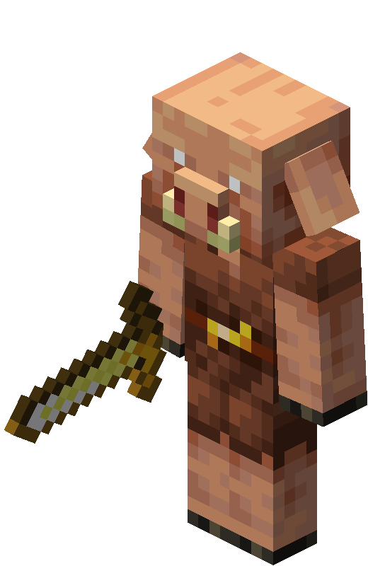
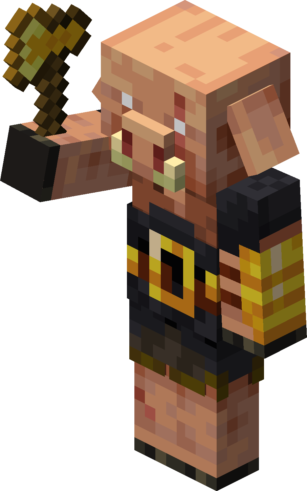
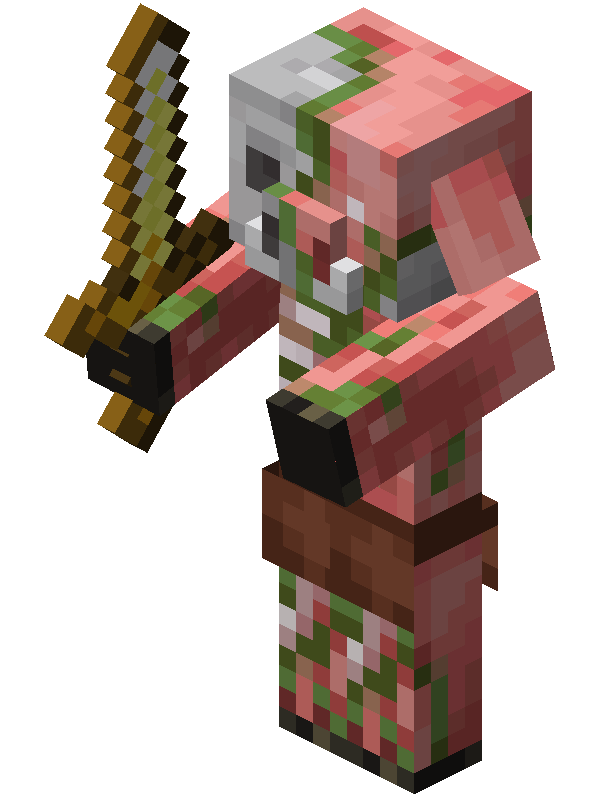
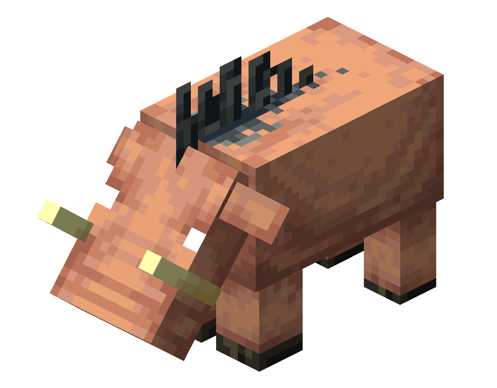
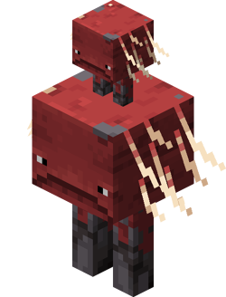
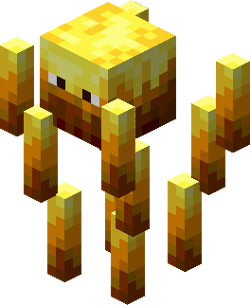
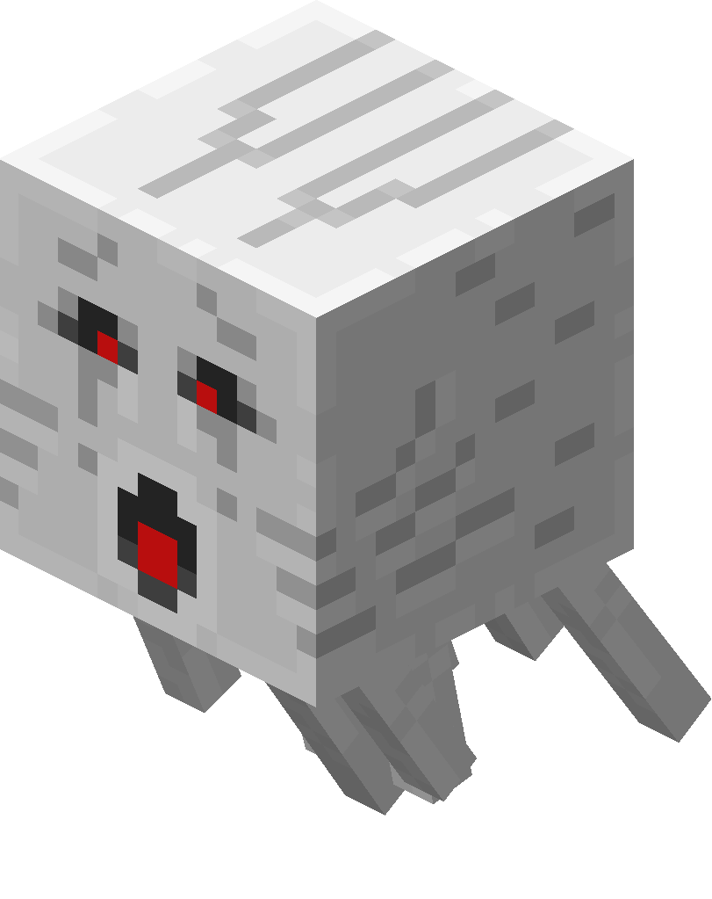
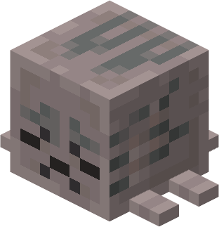
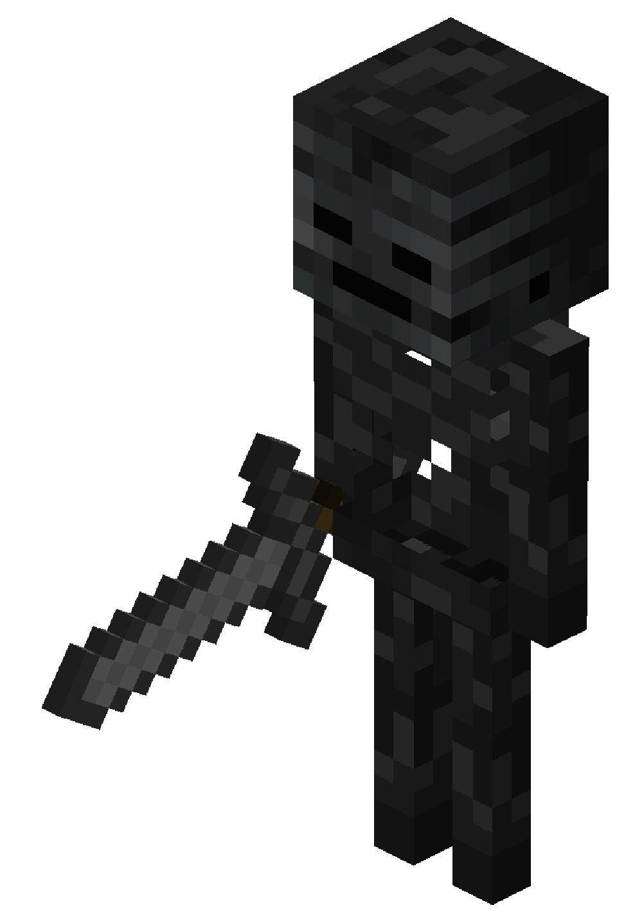
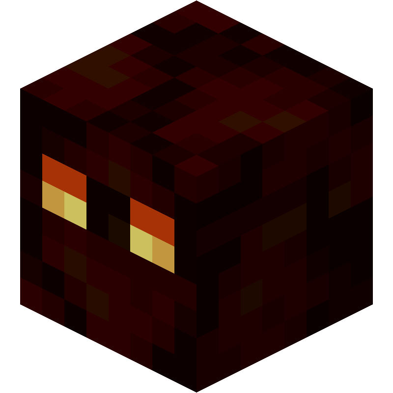

Un piglin es un enemigo neutral que se encuentra en el Nether. Es hostil para los jugadores a menos que lleven al menos una pieza de armadura dorada. Se le pueden dar lingotes de oro para intercambiar por varios objetos. Empuña una espada dorada o una ballesta, y utiliza ataques cuerpo a cuerpo o a distancia, respectivamente. Los bebés piglins no crecen, son pasivos y recogen oro sin dar nada a cambio.
Un piglin bruto es una variante hostil y más fuerte de los piglins que aparece en todo tipo de restos de bastión. A diferencia de los piglins normales, no truecan ni se retiran, y no pueden distraerse con oro. En su lugar, siempre cargan contra el jugador al verse con sus hachas doradas.
Un piglin zombificado (anteriormente llamado Zombie Pigman) es una variante no-muerta neutral del piglin que habita el Nether. Los piglins zombificados normalmente ignoran a los jugadores, pero si uno es atacado, este y todos los piglins zombificados de la zona se enfurece y atacan al agresor con sus espadas doradas.
Un hoglin es una multitud hostil reproductora que se encuentra en el Nether y es una fuente de chuletas de cerdo y cuero. Un hoglin ataca impulsando sus colmillos hacia arriba, lo que también puede lanzar a su objetivo a poca distancia en el aire. Los hoglins son repelidos por hongos deformados que se colocan en el mundo, así como por portales activos del Nether y anclajes de reaparición. Los bebés hoglins se comportan de forma similar, pero tienen un ataque mucho más débil (0,25 corazones) con retroceso normal, y huyen al ser golpeados.
Los Striders son mobs pasivos nativos del Nether. Pueden caminar sobre lava, y ser montados y montados por el jugador. Se necesita un hongo deformado en un palo para controlar un strider, similar a como un cerdo es controlado por una zanahoria en un palo.
Un blaze es un enemigo enemigo que aparece en fortalezas del Nether y es la única fuente de varas de blaze. Los blaze atacan a distancia disparando un trío de bolas de fuego o pueden atacar al jugador que se acerca demasiado con sus varas giratorias.
Los ghasts son grandes enemigos blancos flotantes y fantasmales que viven en el Nether y lanzan bolas de fuego explosivas al jugador.
Un ghast feliz es un moob pasivo añadido en Chase the Skies. A diferencia de su contraparte hostil, el ghast, es pasivo hacia los jugadores y puede montarse usando un arnés.
Los esqueletos wither son variantes negras y altas de esqueletos equipados con espadas de piedra que infligen el efecto Wither, similar a un veneno. Se encuentran exclusivamente en fortalezas del Nether y son la única fuente de cráneos de esqueletos wither, así como la única fuente renovable de carbón.
Un cubo de magma es un mob hostil que se encuentra en el Nether. Un cubo de magma se comporta de forma similar a un slime, pero es ignífugo, salta más alto y con menos frecuencia, y causa más daño.